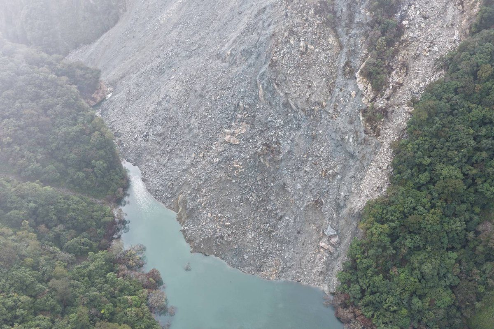

萬里溪堰塞湖蓄水量下修452萬噸 無人船聲納首度揭開水下盲區

可樂電子報小編/編輯
萬里溪堰塞湖的水下謎團，終於有答案。林業及自然保育署花蓮分署與中華防災學會合作，首度派出搭載聲納的無人船潛進湖底掃描，把原本推估約517萬立方公尺的蓄水量，修正為約452萬立方公尺，落差超過60萬立方公尺，也讓下游風險評估有了更扎實的依據。
花蓮分署說明，蓄水量下修的主因是右岸邊坡土石持續崩落，加上上游土砂不斷入流、在湖區淤積，實際容量因此比原本估算少了一截。這片水域位在深山陡峭的V型峽谷，沒有聯外道路，過去只能靠空載光達、無人機空拍、即時影像與水位計掌握壩體外觀與水位變化，水下地形始終是監測盲區。

為了突破地形限制，中華防災學會與空勤、特搜教官多次研商作業細節，最後由內政部空中勤務總隊派遣直升機，以機腹吊掛方式把拼接式載人船與搭載聲納測深設備的無人船送進湖區，同時部署5名研究人員，由特搜人員協助安全戒護與裝備卸載。團隊把握天候穩定時段，5日上午6時至11時30分密集測量，7日完成資料解算。

靠著水下實測，團隊重新率定「水位—蓄水量」關係，同步掌握湖底泥砂淤積分佈與土砂運移趨勢，並探查天然壩體水下邊坡的穩定情形。花蓮分署表示，實測資料已納入水理演算模型，未來面對極端降雨，對溢流洪峰、流速與下游可能影響範圍的模擬會更準確，也能作為滾動檢討警戒基準的依據。

依中央氣象署8日的定量降水預報，上游集水區未來12與24小時累積雨量都預估為0毫米，未達降雨警戒發布標準。當天上午的空拍顯示，壩體完整、湖水穩定溢流，對下游的影響仍侷限在河道內；不過湖區還有約452.90萬立方公尺的蓄水，潛在風險並沒有消失。
花蓮分署提醒，萬里溪河道內的紅色警戒尚未解除，民眾切勿進入花蓮縣政府公告的萬里溪堤防周邊與河床等警戒區域。可樂電子報會持續追蹤水位與警戒變化，有最新訊息第一時間更新。
📸 更多現場紀實影像


▶ 延伸觀看
📺 相關報導影片：點此於 YouTube 觀看完整報導
🌟 掌握花蓮在地第一手資訊・歡迎訂閱追蹤
深度紀實報導、在地精采影音專題，第一時間接收最新消息！